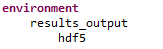
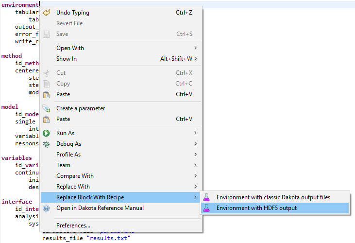
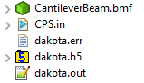
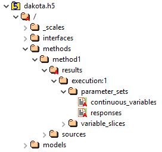
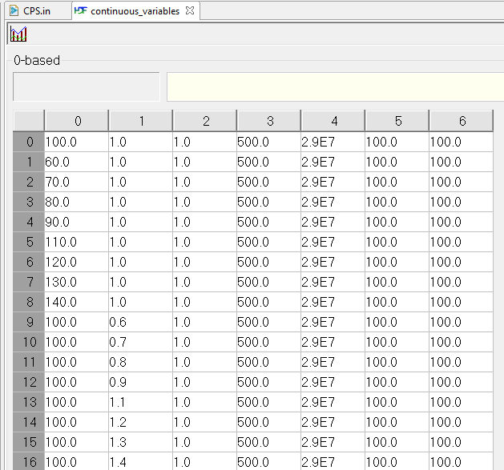
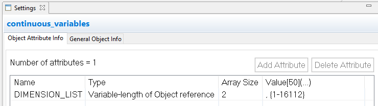

HDF5 in Dakota GUI
Introduction
In 2018, with the release of version 6.9.0, Dakota began providing HDF5 database files as a supported output format for its data. Historically, all of Dakota’s output data was written to plain text formats - tabular data files, console output stream, etc. This meant that parsing Dakota’s output data was a manual, sometimes difficult process. On the other hand, HDF5 is a standard for scientific programming data storage, and there are many tools readily available for reading data out of an HDF5 file.
Recommended Reading about HDF5
Generating an HDF5 Output File from Dakota
Configuring Dakota to generate HDF5 output is easy. In the environment block of your study, add the keywords results_output and hdf5.
Dakota GUI also provides a block recipe to do this for you:
Now, the next time you run Dakota, an h5 file that contains your Dakota data in HDF5 format will be added to your project directory.
Browsing HDF5 Files in Dakota GUI
All HDF5 files (not just those generated by Dakota) are browseable in the Dakota GUI, thanks to the incorporation of the HDF Group’s HDFView tool.
Clicking on the small arrow next to our h5 file will expand it to the first level of data contained within.
The data contained in HDF5 files are primarily composed of groups and datasets which roughly correspond to the idea of folders and files in an operating system:
This is what an average Dakota HDF5 file looks like after expanding a few of the folders. Groups are designated by folder icons, whereas datasets are designated by page icons.
To view the data in an individual dataset, simply double-click it to display the table of data in your editor area.
Attributes about a group or dataset can be viewed using the Settings Editor view (Window > Show View > Settings).
Note
The Dakota GUI provides an HDF File Viewing perspective that docks the Settings Editor view in the center of your perspective. To activate this perspective, go to “Window > Perspective > Open Perspective > Other” and then select “HDF File Viewing.”
Note
Dakota GUI only supports viewing HDF5 files in read-only mode. You cannot use the Dakota GUI to write to an h5 file after it has been created.
Using HDF5 Files for Graphical Plotting
HDF5 files are recognized by Chartreuse (Dakota GUI’s plotting library) as a source of plottable data.
Using HDF5 Files in Next-Gen Workflow
HDF5 files can also be used when building workflows in Next-Gen Workflow.